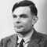
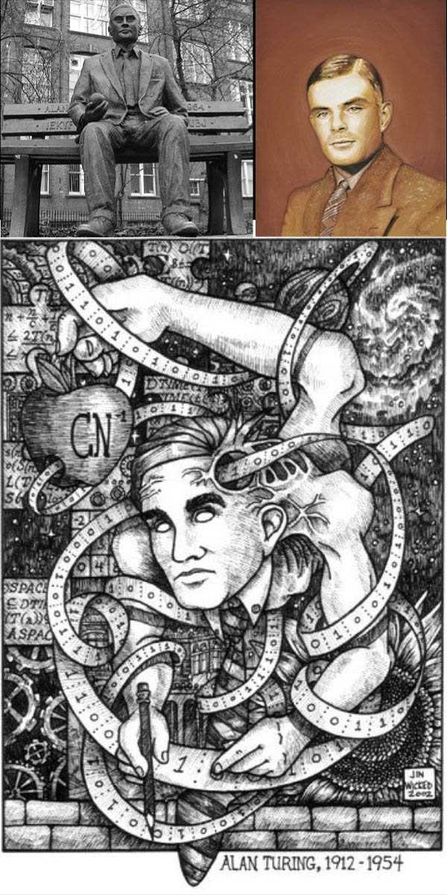

<div class="profile"><div>
  <div class="source">
Turing machine (1936)
  </div>
  <div class="detail">
    
    <div class="search"><a href="http://www.google.com/cse?cx=partner-pub-6997921015773263:4467526896&ie=UTF-8&q=Alan Turing" target="_blank"></a> | <a href="http://en.wikipedia.org/wiki/Alan_Turing" target="_blank">wiki</a></div>
    <div class="name"><a href="http://www.mathcomp.leeds.ac.uk/turing2012/" target="_blank">Alan Turing</a></div>
    <div class="info"><b>Alan Mathison Turing</b>, OBE, FRS ( /<span class="IPA">ˈtjʊərɪŋ</span>/ tewr-ing; 23 June 1912 – 7 June 1954), was an English mathematician, logician, cryptanalyst, and computer scientist. He was highly influential in the development of computer science, providing a formalisation of the concepts of "algorithm" and "computation" with the Turing machine, which played a significant role in the creation of the modern computer. Turing is widely considered to be the father of computer science and artificial intelligence. 
    <p>The <b><a href="http://en.wikipedia.org/wiki/Turing_machine" target="_blank">Turing machine</a></b> mathematically models a machine that mechanically operates on a tape. On this tape are symbols which the machine can read and write, one at a time, using a tape head. Operation is fully determined by a finite set of elementary instructions such as "in state 42, if the symbol seen is 0, write a 1; if the symbol seen is 1, shift to the right, and change into state 17; in state 17, if the symbol seen is 0, write a 1 and change to state 6;" etc.</p>
    </div>
  </div>
  <div class="photo">
    
  </div>
</div></div>
